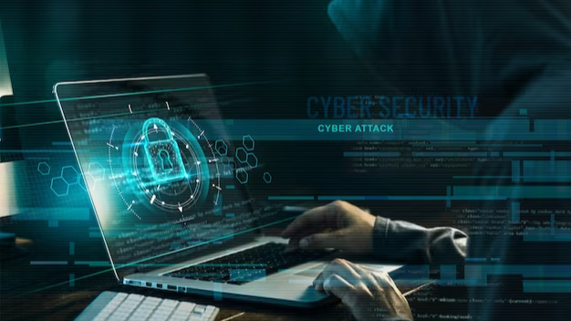
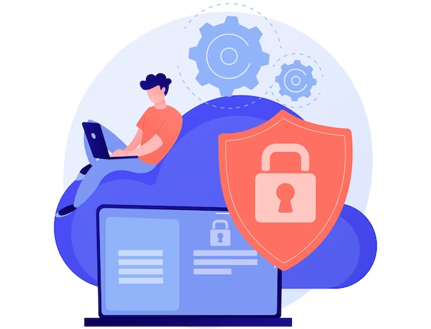

In today's digital age, cybersecurity is a top priority for businesses and individuals alike. The threat of cyber attacks and data breaches is constantly looming, making it essential to implement robust security measures to protect sensitive information. Phishing attacks, in particular, have become an increasingly common and sophisticated form of cybercrime that can wreak havoc on unsuspecting victims.
Phishing is a technique used by cybercriminals to trick individuals into divulging sensitive information such as passwords, credit card details, and social security numbers. These attacks can be conducted via email, text message, or social media, and often use social engineering tactics to lure victims into a false sense of security.
The consequences of falling victim to a phishing attack can be severe, resulting in financial loss, reputational damage, and legal consequences. Phishing protection is therefore critical in ensuring the security and safety of your personal and business information. Visit phishprotection.com for more details.

Phishing involves the use of fraudulent emails, websites, or messages by malicious actors to deceive individuals into disclosing sensitive information like login credentials, credit card details, or personal data. These attacks are cleverly crafted to imitate reliable sources, causing victims to mistakenly believe they are engaging with authentic entities.
Phishing attacks have experienced a significant increase in recent years, emerging as one of the prevalent and triumphant cyber threats. Their effectiveness is the underlying factor driving their favorability among cybercriminals.
Phishing attacks make use of human psychology, capitalizing on emotions such as fear, urgency, or curiosity in order to manipulate users into carrying out the desired actions. Even individuals who possess a good understanding of the subject matter can become prey to these meticulously designed ploys.
Both individuals and organizations can face severe consequences if they fall prey to a phishing attack. When attackers acquire stolen login credentials, they can gain entry into sensitive accounts, putting personal data at risk and potentially leading to identity theft.

Phishing attacks can result in data breaches, financial losses, harm to reputation, and legal ramifications when it comes to businesses.
With the constant advancement in the complexity of phishing attacks, it is imperative to establish strong safeguards against them in order to maintain a resilient cybersecurity stance. Presented below are key elements that should be incorporated into any phishing protection strategy:
Finally, phishing attacks are becoming increasingly common and sophisticated, posing a significant threat to individuals and organizations alike. Implementing robust phishing protection measures is essential to mitigate the risk of these attacks and safeguard sensitive information from falling into the hands of cybercriminals. By educating employees, using advanced technologies, and continuously monitoring and updating security measures, businesses can stay ahead of cyber threats and protect their reputation and bottom line. It is critical for companies to recognize the vital role that phishing protection plays in cybersecurity and to make it a top priority in their overall security strategy.